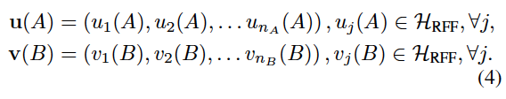
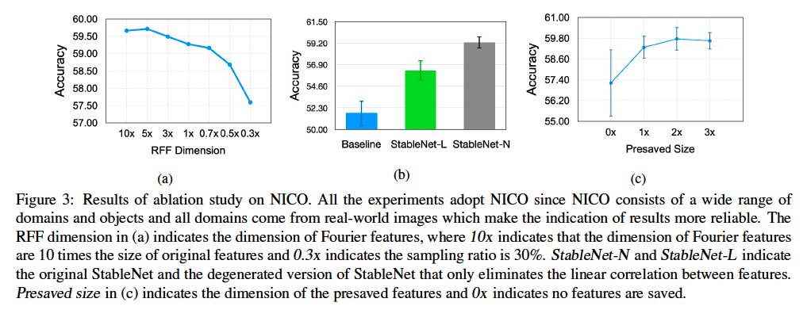

Stable Learning简介
引例
- 识别一张图片中是否有狗。在很多预测问题中，我们拿到的数据集往往都是有偏的，比如我们拿到的数据中有80%的图片中狗都在草地上，这样就导致在训练集中草地这一特征会和图片中是否有狗这个label十分相关。基于这样的有偏数据集学习一个预测模型，无论是LR，还是Deep Model，都很有可能会将草地这一特征学习成很重要的预测特征。

- 如果要帮助医院预测一个癌症患者的生存率，我们很难拿到所有医院的数据，假设我们现在拿到了某一个城市某一个医院的数据，如果我们利用这个数据集做建模，我们可能会发现在这个医院中病人的收入越高，病人的幸存率也会越高，这是有道理的，收入高的病人得到的治疗和能支付起的药物可能更好。基于这样的模型做预测时，如果未来的要预测的病人同样是来自该医院的患者，我们可能会得到很准确的预测结果。但是如果未来要预测的数据集来自军队医院、学校医院等对患者收入没有要求的医院，此时的预测效果很可能不好。
稳定学习的动机
目前深度学习在很多研究领域特别是计算机视觉领域（如图像识别、物体检测等技术领域）取得了前所未有的进展，而深度模型性能依赖于模型对训练数据的拟合。当训练数据（应用前可获取的数据）与测试数据（实际应用中遇到的实例）分布不同时，传统深度模型对训练数据的充分拟合会造成其在测试数据上的预测失败，进而导致模型应用于不同环境时的可信度降低。稳定学习就是为了提高模型在任意未知应用环境中的准确率和稳定性。
上图（来自崔鹏老师的slide）给出了常见的独立同分布模型、迁移学习模型和稳定学习模型的异同。
独立同分布(i.i.d)模型的训练和测试都在相同分布的数据下完成，测试目标是提升模型在测试集上的准确度，对测试集环境有较高的要求；
迁移学习同样期望提升模型在测试集上的准确度，但是允许测试集的样本分布与训练集不同。独立同分布学习和迁移学习都要求测试集样本分布已知；
而稳定学习则希望在保证模型平均准确度的前提下，降低模型性能在各种不同样本分布下的准确率方差。理论上稳定学习可以在不同分布的测试集下都有较好的性能表现。
OOD泛化中的深度稳定学习
模型架构
大致思路就是通过上面的LSWD分支学习采样权重，在损失计算阶段进行加权，模拟重采样，实现特征分布之间的独立性，尽量去除所有特征之间的相关性，从而解决DG问题中不相关变量对模型鲁棒性的影响。
摘要
深度学习在很多领域的成功得益于iid假设，但是对于ood则会有很大的问题。所以消除分布偏移至关重要。
传统方法消除分布偏移往往基于以下假设：
a. 显式domain label（大量的额外标注，且人类认知有限，无法对域）
b. 潜在领域的平衡采样（假设本身就很脆弱）
本文抛弃上述假设，通过去除特征之间的依赖，进而去除不相关特征与标签的错误相关性，使得模型的关注点落在真正相关的特征上。
引言
首先想要明确，ood泛化性的研究就是为了是模型在存在分布偏移的时候依然可以有不错的效果。
现在模型在OOD性能下降的根本原因在于不相关特征与标签的错误相关性，而不相关特征能与标签建立相关性是由于不同数据分布下，特征之间本身就存在着微妙的相关性，比如狗一般出现在陆地上，鱼一般出现在水里，鸟一般出现在树上等等，这就会导致陆地、水、树与最终的标签产生错误的相关性。
OOD现有的解决方案可以分为两类：
- Domain generation：显式domain label
- Learn latent domains from data：潜在领域的平衡采样
目前有一个更加有效的思路：直接剔除相关特征和不相关特征之间的相关性。但特征是否相关是一件无法得知的事情，所以不妨去除所有特征之间的关联。
去相关性的现有解决方案主要集中在线性框架，并取得了不错的成效，大致思路是通过使混杂变量平衡（Confounder Balancing）的方法来使得神经网络模型能够推测因果关系 。具体而言，如果要推断变量A对变量B的因果关系（存在干扰变量C），以变量A是离散的二元变量（取值为0或1）为例，根据A的值将总体样本分为两组（A=0或A=1），并给每个样本赋予不同的权重，使得在A=0和A=1时干扰变量C的分布相同（即D(C|A=0) = D(C|A=1)，其中D代表变量分布），此时判断D(B|A=0) 和D(B|A=1)是否相同可以得出A是否与B有因果关系。
但上述方法扩展到深度模型会面临两个主要挑战：
- 特征之间复杂的非线性依赖关系比线性依赖关系更难度量和消除；
- 全局样本加权策略对深度模型的存储量和计算量要求都比较大，这在实际中是不可行的。
针对这两个挑战，本文有如下解决方案：
- 针对上面说到的第一个挑战，本文提出了一种新的基于随机傅立叶特征的非线性特征去相关方法。
- 对于上面说到的第二个挑战，本文提出了一种高效的优化机制，通过迭代保存和重新加载模型的特征和权重来感知和去除全局相关性。且该方法对这两个模块进行了联合优化。
针对DG提出的采样方案
独立性检验统计量
如果非线性相关性处理比较麻烦，不妨使用核方法将其映射到高维空间（参考kernel SVM之类的思想），将非线性相关性转化为高维空间的线性相关性，从而降低难度。
衡量随机变量线性相关性的常用统计量为pearson相关系数，如果要去除随机变量之间的线性相关性，就可以考虑使pearson相关系数降为0，也就是使得二者协方差降为0
基于上述分析，使用核方法将随机变量映射到无穷维空间，构造再生核希尔伯特空间（RKHS），在该空间中，我们可以定义协方差算子Σ，根据Hilbert-Schmidt独立性准则（HSIC），我们只需要使得协方差算子的hilbert-schmidt范数为0即可保证两个元素的独立性。
由于在欧式空间，F范数与hilbert-schmidt范数是一致的。所以，在样本数目为n的数据集上，我们可以先将协方差算子建立为协方差矩阵的形式：
但由于RKHS空间为无穷维，上式无法直接进行计算。刚好随机傅立叶特征（RFF）对任意核函数都有不错的近似作用，所以我们不妨使用随机傅立叶特征将映射空间降到d维，从而使上式中的F范数进行计算：

综上所述，独立性检验统计量的计算就可以分为两步，首先通过RFF进行特征映射，然后进行协方差矩阵的F范数作为独立性检验统计量。
学习样本权重用于去相关性
有了之前的分析，这里就是很自然的想法了。我们通过学习采样权重（模拟采样，在loss上做手脚）来改变不同特征的分布，控制不同特征之间的独立性。
首先，确定采样权重来平衡混杂变量：
然后，将表征函数f和分类函数g加入损失计算，得到StableNet的目标函数：
全局样本权重的学习
上述公式要求在训练过程中为每个训练样本都学习一个特定的权重，但在实践中，尤其对于深度学习任务，要想利用全部样本全局地学习样本权重需要巨大的计算和存储开销。
此外，使用SGD对网络进行优化时，每轮迭代中仅有部分样本对模型可见，因此无法获取全部样本的特征向量。
本文提出了一种存储、重加载样本特征与样本权重的方法，在每个训练迭代的结束融合并保存当前的样本特征与权重，在下一个训练迭代开始时重加载，作为训练数据的全局先验知识优化新一轮的样本权重，如下图所示：
在每一轮训练结束后，将本次的Z和w融合到全局信息中，如下图所示：
k表示一个倍数，也就是presaved的特征数目是原始特征的k倍。可以看成一个trick，后面作者做了ablation study证明了k的效果。
得到权重之后，通过在loss中加权模拟重采样来实现特征之间的去相关性。
实验
在常规的域泛化（DG）任务中，训练集的不同源域容量相近且异质性清晰，然而在实际应用中，绝大部分数据集都是若干潜在源域的组合，当源域异质性不清晰或未被显式标注时，我们很难假定来自于各源域的数据数量大致相同。为了更加全面地验证StableNet的泛化性能，本文提出三种新的域泛化任务来仿真更加普适且挑战性更强的分布迁移泛化场景，同时也比较了传统DG设定下的实验结果。
不均衡的域泛化
对于源域不明确的域泛化问题，假定源域容量相近过于理想化，一个更普适的假设为来自不同源域的数据量可能不同且可能差异巨大。在这种情况下，模型对于未知目标域的泛化能力更满足实际应用的需求。例如在识别狗的例子中，我们很难假定背景为草地、沙滩或水里的图片数量相同，实际情况下狗较多地出现在草地上而较少出现在水里。这就要求模型的预测不能被经常与狗一起出现的背景草地误导，所以本任务的普适性和难度显著高于均衡的域泛化。
部分类别缺失的域泛化
考虑一种挑战性更大且在现实场景中经常存在的情况，某些源域中有部分类别的数据缺失，而在测试集中模型需要识别所有类别。例如，鸟经常出现在树上而几乎不会出现在水里，鱼经常出现鱼缸里而几乎不会出现在树上，所以并不是所有源域都一定包含全部类别。这种场景要求更高的模型泛化能力，由于每个源域中仅有部分类别，所以域相关的特征与标签间的虚假关联更强且更易误导分类器。
存在对抗的域泛化
一种难度更大的场景是任一给定类别的主导源域与主导目标域不同。例如，训练数据中的狗大多在草地上而猫大多在室内，而测试数据中的狗大多在室内而猫大多在草地上，这就导致如果模型不能区分本质特征与域相关特征，就会被域信息所误导而做出错误预测。下表为在MNIST-M数据集上的实验结果，StableNet仍显著优于其他方法，且可见随主导域比例升高，ResNet的表现显著下降，StableNet的优势也越发明显。
传统DG设定
数据集中的所有类别的样本都有相同的域集合。
Ablation study
该消融实验主要是验证RFF采样数目和presaved特征数目对结果的影响，同时也比较了去除线形相关性和非线性相关性对结果的影响。

代码可用性
源码： https://github.com/xxgege/StableNet
- 源代码与论文保持一致，基于pytorch开发，可直接适配CV数据
- 代码支持分布式多卡训练以及resume训练等操作
- 训练过程包括两个学习过程
- 采样权重学习
- 分类网络参数学习
- 模型backbone为resnet，prediction分支的输出产生loss，与学到的weight进行加权（模拟重采样）进行回传
- 代码可读性较高，改造比较容易：
- 修改backbone：非CV相关任务可以直接改成fc或者transformer encoder，用于特征初步提取与映射。
- 权重学习分支无需修改
- 主任务分支只需要对应特定任务即可
- 训练脚本的dataloader需要重写